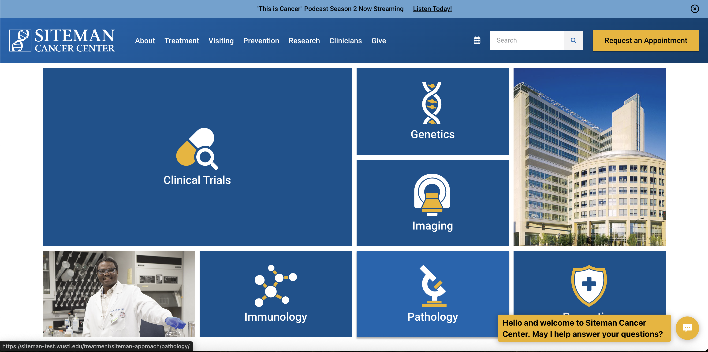
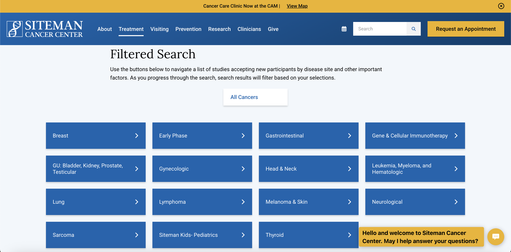
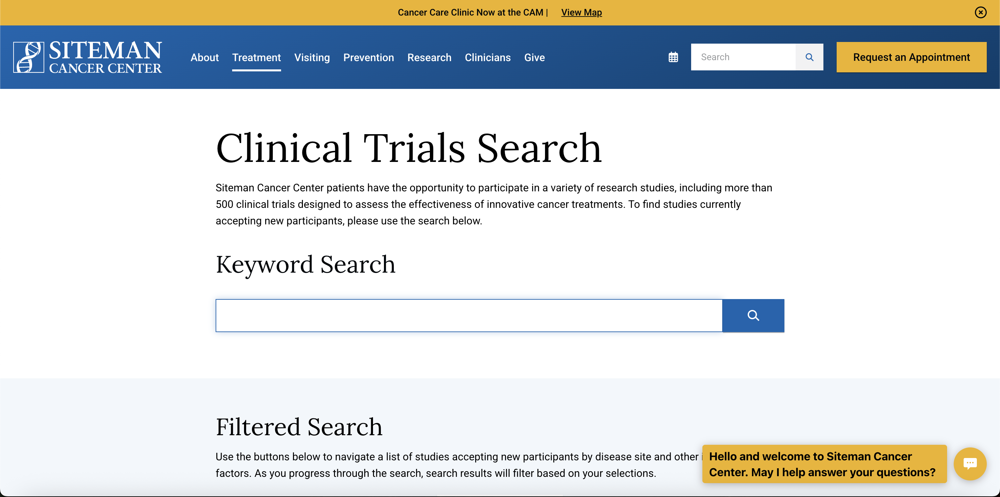
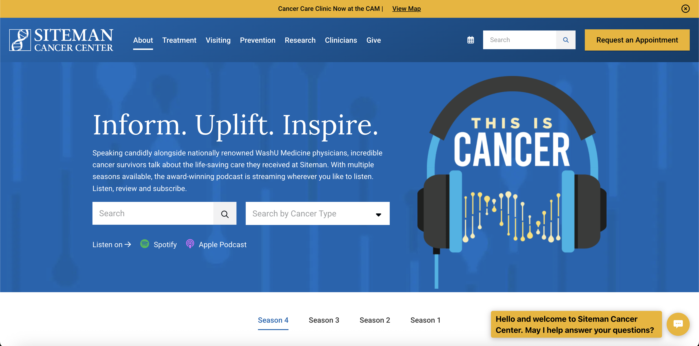
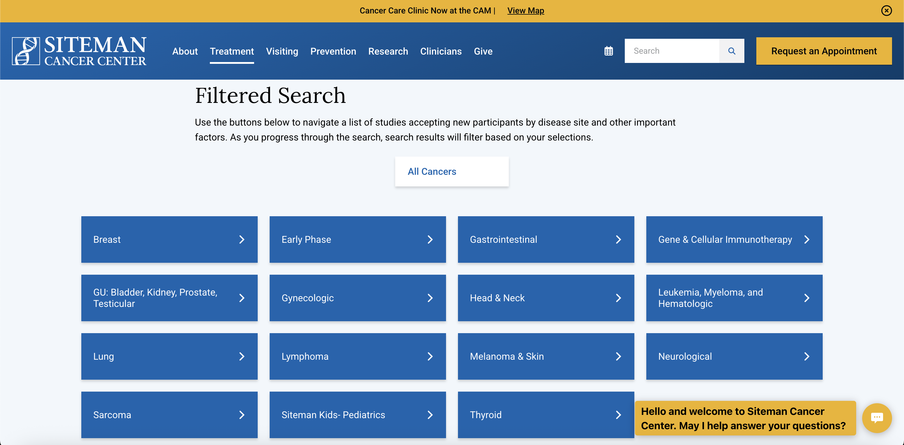
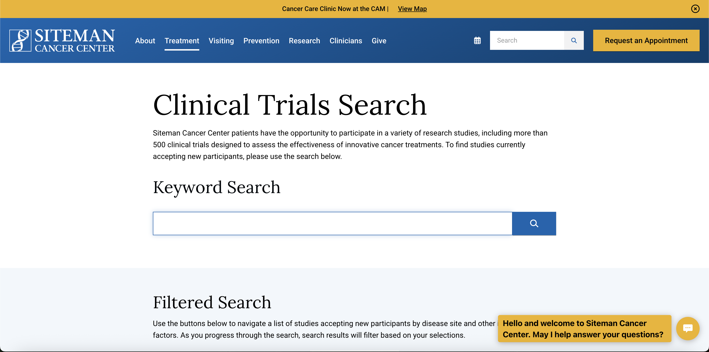
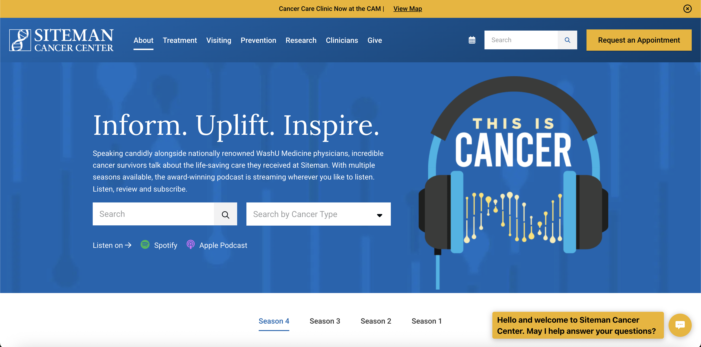

Role: Lead Developer (Current Project)
Live Site: siteman.wustl.edu
Technologies: WordPress, JavaScript, SCSS, Relevanssi, Yoast SEO, ACF, Gutenberg
Current project involving full website redesign while managing maintenance of existing site. Successfully migrated from on-premises to Pantheon hosting and developed specialized pediatric cancer content templates. Actively consulting on comprehensive WordPress rebuild launching mid-2026, designed to help patients identify their needs and access appropriate care throughout their cancer journey.
Inherited Project Management: Successfully inherited and took over maintenance of the Siteman Cancer Center website from a different agency in winter 2025, ensuring continuity of service and maintaining critical functionality for cancer patients and their families during the transition period.
On-Premises to Pantheon Migration: Migrated the site from on-premises hosting (managed by Washington University) to Pantheon hosting, providing numerous benefits:
Children's Content Templates: Developed a comprehensive set of specialized templates specifically designed for pediatric cancer content, addressing the unique needs of families dealing with childhood cancer:
Improved Editor Experience: Significantly enhanced the content editor experience by making previously manual processes dynamic and automated:
Immediate Improvements: Since inheriting the project, I've made significant improvements to the hosting infrastructure, content management experience, and specialized pediatric content offering. The migration to Pantheon hosting has improved site reliability and management capabilities.
Full WordPress Rebuild: Currently leading consultation and development on a brand new WordPress site that will be built over the course of the next year for a mid-2026 launch. This comprehensive redesign focuses on creating a patient-centered experience that addresses the diverse needs of individuals at different stages of their cancer journey.
Personalized Cancer Journey: The new site is being designed to help patients easily identify their specific needs and access appropriate care regardless of where they are in their individual cancer journey. Key focus areas include:
Demonstration of the specialized children's cancer content templates and navigation completed in the summer of 2025.

 




